Next:
Probability estimates in theory
Up:
The Binary Independence Model
Previous:
The Binary Independence Model
Contents
Index
Given a query  , we wish to order returned documents by descending 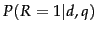. Under the BIM, this is modeled as ordering by
, we wish to order returned documents by descending 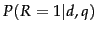. Under the BIM, this is modeled as ordering by
 . Rather than estimating this probability directly, because we are interested only in the ranking of documents, we work with some other quantities which are easier to compute and which give the same ordering of documents. In particular, we can rank documents by their odds of relevance (as the odds of relevance is monotonic with the probability of relevance). This makes things easier, because we can ignore the common denominator in Rxq-bayes, giving:
. Rather than estimating this probability directly, because we are interested only in the ranking of documents, we work with some other quantities which are easier to compute and which give the same ordering of documents. In particular, we can rank documents by their odds of relevance (as the odds of relevance is monotonic with the probability of relevance). This makes things easier, because we can ignore the common denominator in Rxq-bayes, giving:
The left term in the rightmost expression of Equation 66 is a constant for a given query. Since we are only ranking documents, there is thus no need for us to estimate it. The right-hand term does, however, require estimation, and this initially appears to be difficult: How can we accurately estimate the probability of an entire term incidence vector occurring? It is at this point that we make the Naive Bayes conditional independence assumption that the presence or absence of a word in a document is independent of the presence or absence of any other word (given the query):
 |
(67) |
So:
Since each
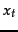 is either 0 or 1, we can separate the terms to give:
 |
(69) |
Henceforth, let
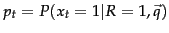 be the probability of a term appearing in a document relevant to the query, and
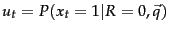 be the probability of a term appearing in a nonrelevant document. These quantities can be visualized in the following contingency table where the columns add to 1:
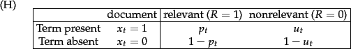
Let us make an additional simplifying assumption that terms not occurring in the query are equally likely to occur in relevant and nonrelevant documents: that is, if 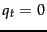 then 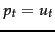. (This assumption can be changed, as when doing relevance feedback in Section 11.3.4 .) Then we need only consider terms in the products that appear in the query, and so,
The left product is over query terms found in the document and the right product is over query terms not found in the document.
We can manipulate this expression by including the query terms found in the document into the right product, but simultaneously dividing through by them in the left product, so the value is unchanged. Then we have:
 |
(71) |
The left product is still over query terms found in the document, but the right product is now over all query terms. That means that this right product is a constant for a particular query, just like the odds
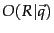. So the only quantity that needs to be estimated to rank documents for relevance to a query is the left product. We can equally rank documents by the logarithm of this term, since log is a monotonic function. The resulting quantity used for ranking is called the
Retrieval Status Value (RSV) in this model:
So everything comes down to computing the . Define 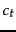:
The
terms are log odds ratios for the terms in the query. We have the odds of the term appearing if the document is relevant (
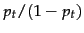) and the odds of the term appearing if the document is nonrelevant (
 ). The
odds ratio is the ratio of two such odds, and then we finally take the log of that quantity. The value will be 0 if a term has equal odds of appearing in relevant and nonrelevant documents, and positive if it is more likely to appear in relevant documents. The
quantities function as term weights in the model, and the document score for a query is
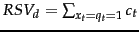. Operationally, we sum them in accumulators for query terms appearing in documents, just as for the vector space model calculations discussed in Section
7.1 (page
). The
odds ratio is the ratio of two such odds, and then we finally take the log of that quantity. The value will be 0 if a term has equal odds of appearing in relevant and nonrelevant documents, and positive if it is more likely to appear in relevant documents. The
quantities function as term weights in the model, and the document score for a query is
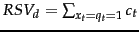. Operationally, we sum them in accumulators for query terms appearing in documents, just as for the vector space model calculations discussed in Section
7.1 (page
![[*]](http://nlp.stanford.edu/IR-book/html/icons/crossref.png) ). We now turn to how we estimate these
quantities for a particular collection and query.
). We now turn to how we estimate these
quantities for a particular collection and query.
Next:
Probability estimates in theory
Up:
The Binary Independence Model
Previous:
The Binary Independence Model
Contents
Index
© 2008 Cambridge University Press
This is an automatically generated page. In case of formatting errors you may want to look at the PDF edition of the book.
2009-04-07